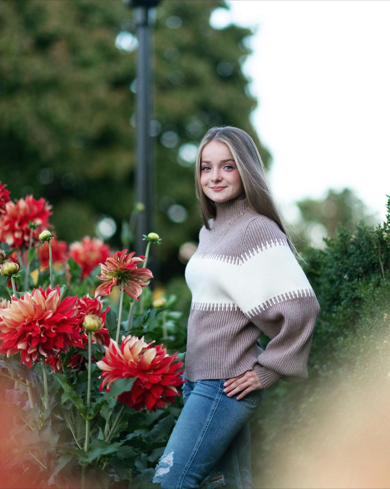
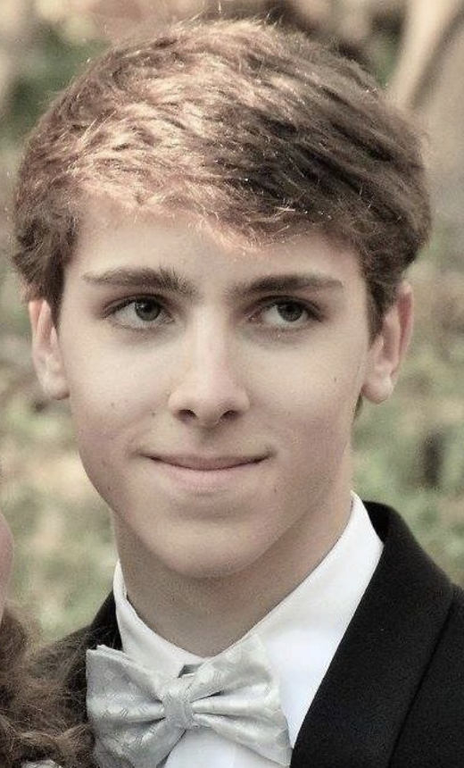
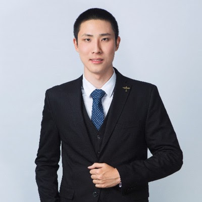

Meet the Research Team
What brings me joy? Mentoring students. My formal training in education (i.e., evidence-based practices of how students learn) and my own experience with outstanding mentors have taught me to tailor my mentoring style to meet the individual needs of each student, with a particular focus on student mental health and fostering a supportive group environment. Seeing students learn and thrive, getting them excited about science, and paying my experience forward to watch them grow personally and professionally is truly rewarding. My completed and ongoing projects would not be possible without the dedicated and creative team I am grateful to have the opportunity to lead.

Lily Raaka
- Major in Mathematics with a Minor in East Asian Studies China subplan, and pursuing a Masters in Management Science and Engineering at Stanford University.
- Lily loves listening to music, running, trying/cooking new food, is a Stanford Tour Guide and a member of the sorority Delta Delta Delta.
Ryan Southward

- Major in Symbolic Systems with a Neuroscience Concentration at Stanford University.
- Ryan is a Chicago native, loves skiing and playing madden NFL football, and is a member in the Stanford Society of Black Scientists and Engineers.
Noor Hassan
- Dual Major in Symbolic Systems with a Neuroscience Concentration and Human Biology with an Epidemiological Concentration at Stanford University.
- Noor is a New Jersey native, loves the luxury lifestyle of eating out with her friends multiple times throughout the day and is the Community Building Director of the Muslim Student Union.
- She was awarded and completed a $7500 Wu Tsai Neurosciences Institute NeURO Fellowship in the lab.
Michelle Buyan

- Major in Symbolic Systems with a Decision Making and Rationality Concentration at Stanford University.
- Michelle loves going to the gym, doing puzzles, dabbles in photography, is the Director of Communications for Stanford Women in Engineering and a member of the sorority alpha Kappa Delta Phi.
Selena Niemi

- Major in Human Biology with a Concentration in the Neuroscience of Human Behavior and Development at Stanford University.
- Selena is a first-generation college student, loves running, reading, binge watching old sitcoms, and is a member of Stanford's Women’s Club Basketball, Women in Medicine, and the Kappa Kappa Gamma sorority.
Eli Wandless
- Major in Symbolic Systems with a Concentration in Neuroscience at Stanford University.
- Eli loves watching and playing soccer, spending time outside with his friends, and was accepted into the 2024 Studying Abroad Program in Madrid to immerse in Spanish culture and learning the language.
- He was awarded and completed a $7500 Bio-X Undergraduate Summer Research Fellowship in the lab.
Where are they now?
Olivia Brand

- Accepted into The State University of New York’s Upstate Medical University Program to pursue her M.D. in Syracuse, NY.
- Olivia was a varsity athlete, graduated with a Major in Biological Sciences, a Minor in Biomedical Engineering, and with Honors after completing the Biological Sciences Honors Research Program in the lab at Carnegie Mellon University.
- Olivia was an RA in Cassie's Army for 3 years from 2020 until she graduated in 2023, co-authored 1 conference publication, 3 conference talks, 1 poster, and first-authored a conference talk and poster: 1st Place Awardee both University-Wide and College-Wide Sigma Xi Presentation Competition CMU Meeting of the Minds Symposium; Elizabeth W. Jones Awardee for Excellence in Experimental Computational Biology.
Morgan Boyd

- Accepted into New York University's Developmental Psychology Ph.D. Program in NYC.
- Morgan graduated with a Major in Psychology, Learning & Development Concentration and a Minor in Creative Writing from Carnegie Mellon University.
- Morgan was an RA in Cassie's Army for 4 years from 2019 until she graduated in 2023, was a PIER Research Experience for Undergraduates (REU) Summer Program Scholar in the lab, first-authored 1 conference publication (CogSci) and 3 posters (CDS, ABRCMS, ISDP), and co-authored 1 talk and 1 poster: ABRCMS 2021 Presentation Awardee, 2021 ISPD People’s Choice Poster Awardee.
Melissa Pocsai

- Melissa graduated with a Major in Psychology with a Dual Major in Neuroscience and Chemistry at the University of Pittsburgh.
- She was accepted into The City University of New York’s Clinical Neuropsychology Ph.D. Program in NYC.
- During her time in Cassie's Army, Melissa co-authored 1 publication, 2 conference publications, 2 talks, 5 posters (SRCD, CogSci, SfN, ABRCMS, ISDP), and first-authored a poster at The Eberly Center for Teaching Excellence and Educational Innovation’s Teaching and Learning Summit.
Dominic Calkosz
- Senior Game Designer at Blizzard Entertainment in Irvine, CA.
- Dom graduated with a Major in Computer Science and a Minor in Game Design at Carnegie Mellon University.
- Dom was an RA in Cassie's Army for 4 years from 2017 until he graduated in 2021, co-authored 1 publication, 2 conference publications, 2 conference talks, and 7 poster presentations: 1 first-authored, 2nd place Awardee CMU Meeting of the Minds Symposium for Outstanding Research in Psychology.
Kaitlynn Cooper
- Software Engineer at Amazon in Seattle, WA.
- Kaitlynn graduated with Dual Major in Biology and Computational Biology with Honors after completing the Mellon College of Science Honors Program in the lab at Carnegie Mellon University.
- Kaitlynn was an RA in Cassie's Army for 3 years from 2019 until she graduated in 2022, was a $3500 Summer Undergraduate Research Fellowship Awardee, co-authored 1 conference talk and first-authored 2 posters: CMU Conference Presentation Awardee, Porges Family Foundation Research Fellow Awardee.
Camila Bodden

- Accepted into the Master's Biomedical Engineering Graduate Program at Carnegie Mellon University and is a Chemical & Biology Researcher at Harvard University in Cambridge, MA.
- Cami graduated with a Major in Biology and a Minor in Spanish and was a varsity athlete at Carnegie Mellon University.
- Cami was an RA in Cassie's Army for 3 years from 2021 until she graduated in 2023, was a $2000 Small Undergraduate Research Crosswalk Funding Grant Awardee, co-authored a paper symposium at the JPS Conference and 2 poster presentations.
Eileen Lee

- Product Designer at GoDaddy Inc., a domain registrar and web hosting company in Los Angeles, CA.
- Eileen graduated with a Triple Major in Art, Psychology, and Human-Computer Interaction at Carnegie Mellon University.
- Eileen was an RA in Cassie's Army for 3 years from 2019 until she graduated in 2022, was a $2000 Small Undergraduate Research Crosswalk Funding Grant Awardee, co-authored 2 conference talks and 2 posters: 2nd place Awardee CMU Meeting of the Minds Symposium for Outstanding Research in Psychology.
Chenelle Miller

- Accepted into Hofsta University's Clinical Psychology Ph.D. Program in Long Island, NY.
- Chenelle was a Summer PIER Research Experiences for Undergraduate (REU) Scholar in the lab at Carnegie Mellon University and graduated with a Major in Psychology and a Minor in African American Studies at University of Virginia.
- During her summer fellowship in Cassie's Army, Chenelle first-authored 1 talk and 2 conference posters: 2021 ISPD People’s Choice Poster Awardee.
Sebastian (Yukai) Yang
- AR/VR Software Engineer at Apple in Seattle, WA.
- Sebastian graduated with a Dual Major in Information Systems, Statistics and Machine Learning and a Dual Minor in Game Design and Business Administration at Carnegie Mellon University.
- Sebastian was an RA in Cassie's Army for 3 years from 2019 until she graduated in 2022, was a CMU Small Undergraduate Research Grant $1000 Awardee, and co-authored 1 conference publication and 2 symposia talks.
Maanasi Bulusu

- Clinical Researcher at Brown University's Rhode Island Hospital/Warren Alpert Medical School in Providence, RI.
- Maani graduated with a Major in Computational Neuroscience, a conentration in Neurobiology, and with Honors after completing the Dietrich College Senior Honors Program in the lab at Carnegie Mellon University.
- Maani was an RA in Cassie's Army for 4 years from 2019 until she graduated in 2023, was a $2000 Small Undergraduate Research Crosswalk Funding Grant Awardee, completed a Summer Undergraduate Research Apprenticeship in the lab, co-authored 1 conference paper, 2 conference talks, and first-authored 3 posters: ABRCMS 2020 Presentation Awardee, CMU Conference Presentation Awardee.
Adrian Ma

- Game Designer at KooApps, a mobile gaming company in Seattle, WA.
- Adrian graduated with a Dual Major in Cognitive Science and Human-Computer Interaction at Carnegie Mellon University.
- Adrian was an RA in Cassie's Army for 3 years from 2020 until he graduated in 2023, was a $3500 Summer Undergraduate Research Fellowship Awardee, co-authored 1 conference symposium and first-authored 1 conference talk.
Suanna Moron

- Clinical Research Coordinator Associate at Stanford University's Division of Interdisciplinary Brain Sciences and prior Research Coordinator of the Educational Neuroscience Initiative Laboratory.
- Suanna graduated with a Dual Major in Computational Neuroscience and Psychology at Carnegie Mellon University.
- Suanna was an RA in Cassie's Army for 3 years from 2018 until she graduated in 2021, was a CMU Small Undergraduate Research Grant $1000 Awardee, co-authored 1 publication, 1 conference symposium, 1 poster, and first-authored 1 talk and 1 poster: 2nd place Awardee CMU Meeting of the Minds Symposium for Outstanding Research in Psychology.
Adrian Mester

- Game Developer at Simcoach Games, focusing on developing games for Austim Spectrum Disorder (ASD) diagnosis and treatment for children in Pittsburgh, PA.
- Adrian graduated with a Dual Major in Computer Science and Music Technology at Carnegie Mellon University.
- Adrian was an RA in Cassie's Army for 3 years from 2019 until he graduated in 2021, co-authored 1 conference talk and 1 poster presentation.
Marissa McAfee
- Accepted into the Naval Postgraduate School's Master of Meteorology and Operational Oceanography Program and is a Weather and Environmental Science Officer for the U.S. Air Force in Oahu, Hawaii.
- Marissa graduated with a Major in Chemistry and a Minor in Biomedical Engineering and was a varsity athlete at Carnegie Mellon University.
- Marissa was an RA in Cassie's Army for 3 years from 2019 until she graduated in 2022, was a $2000 Small Undergraduate Research Crosswalk Funding Grant Awardee, completed a Summer Undergraduate Research Apprenticeship in the lab, and co-authored 2 conference symposia talks.
Kristy Zhang

- Accepted into the Master of Human-Computer Interaction Graduate Program at Carnegie Mellon University and is a UX Researcher at Google in San Francisco, CA.
- Kristy graduated with a Dual Major in Business Administration and Human-Computer Interaction at Carnegie Mellon University.
- Kristy was an RA in Cassie's Army for 3 years from 2018 until she graduated in 2021, was a CMU Small Undergraduate Research Grant $1000 Awardee, co-authored 1 conference symposium and 1 poster: 2nd place Awardee CMU Meeting of the Minds Symposium for Outstanding Research in Psychology.
Elizabeth Fulton

- Content Stategist at PowerTrain, Inc., a company that specializes in Learning and Cloud-Based IT Solutions through transformative performance technologies in St. Louis, MO.
- Elizabeth graduated with a Dual Major in Computational Neuroscience and Technical Writing at Carnegie Mellon University.
- Elizabeth was an RA in Cassie's Army for 3 years from 2019 until she graduated in 2021, co-authored 1 publication, 1 conference symposium and 1 poster: 2nd place Awardee CMU Meeting of the Minds Symposium for Outstanding Research in Psychology.
Matthew Komar

- Tech Artist at Applied Institution in Mountain View, CA.
- Matthew graduated with a Major in Immersive Technologies from the College of Fine Arts at Carnegie Mellon University.
- Matthew was an RA in Cassie's Army for 2 years from 2020 until he graduated in 2022 and co-authored 1 conference symposium.
Aria Tsegi-Moore

- Accepted into Columbia University's Bridge to the Ph.D. Program in STEM in NYC.
- Aria was a Summer PIER Research Experiences for Undergraduate (REU) Scholar at Carnegie Mellon University and graduated with a Major in Psychology at Stony Brook University.
- During her summer fellowship in Cassie's Army, Aria first-authored 1 conference publication, 1 talk, 1 poster, and co-authored 1 publication: ABRCMS 2019 Presentation Awardee, Stony Brook Conference Travel Awardee.
Kalpa Anjur
- Software Engineer at Salesforce Inc., a cloud-based company that specializes in marketing automation, e-commerce, analytics, and application development in San Francisco, CA.
- Kalpa graduated with a Major in Computer Science and a Minor in Game Design at Carnegie Mellon University.
- Kalpa was an RA in Cassie's Army for 4 years from 2017 until she graduated in 2021, was a CMU Small Undergraduate Research Grant $1000 Awardee, co-authored 1 conference publication, 2 symposia talks, 4 posters, and first-authored 1 conference talk: 2nd place Awardee CMU Meeting of the Minds Symposium for Outstanding Research in Psychology.
Bridget Tan

- Accepted into the Master of Science Electrical and Computer Engineering Graduate Program at Carnegie Mellon University and is a Software Engineer at Johns Hopkins University's Applied Physics Laboratory.
- Bridget graduated with a major in Electrical and Computer Engineering and a minor in Sound Design at Carnegie Mellon University.
- Bridget was an RA in Cassie's Army for 1 year from 2017 until she graduated in 2018, completed a Summer Undergraduate Research Apprenticeship in the lab, and co-authored 4 conference posters: 2nd place Awardee CMU Meeting of the Minds Symposium for Outstanding Research in Psychology.
George Whitfield

- Software Engineer at Google in Boston, MA.
- George graduated with a Major in Electrical and Computer Engineering at Carnegie Mellon University.
- George was an RA in Cassie's Army for 2 years from 2020 to 2022, completed a Summer Undergraduate Research Apprenticeship in the lab, and co-authored 1 conference symposium talk.
Emery Noll

- Accepted into the Master of Science in Medical Sciences Program at Boston University and is a Content Specialist & Data Analyst at Healthcare Data Platform H1, a global healthcare data platform that merges clinical, science, and research insights in Boston, MA.
- Emery graduated with a Dual Major in Biological Sciences and Psychology and was a varsity athlete at Carnegie Mellon University.
- Emery was an RA in Cassie's Army for 2 years from 2018 until she graduated in 2020 and co-authored 1 poster presentation: 2nd place Awardee CMU Meeting of the Minds Symposium for Outstanding Research in Psychology.
Carter Williams

- Software Engineer at Giant Squid Studios, an industry-leading game developer company in Pittstburgh, PA.
- Carter graduated with a Major in Logic and Computation and a Dual Minor in Computer Science and Game Design at Carnegie Mellon University.
- Carter was an RA in Cassie's Army for 3 years from 2017 until he graduated in 2020, co-authored 1 publication, 1 conference publication, 1 symposia, 4 posters, and first-authored 2 poster presentations: 2nd place Awardee CMU Meeting of the Minds Symposium for Outstanding Research in Psychology.
Jonathan Epps

- Acepted into The Fulbright U.S. Student Program in Brazil and is pursuing his Juris Doctor Degree at Yale Law School in New Haven, CT.
- Jonathan was a Summer PIER Research Experiences for Undergraduate (REU) Scholar at Carnegie Mellon University and graduated with a Major in Political Science at Morehouse College.
- During his summer fellowship in Cassie's Army, Jonathan first-authored 1 symposium talk.
Nicole Ang

- Software Development Engineer at Amazon in Seattle, WA.
- Nicole graduated with a Dual Major in Statistics and Machine Learning and Information Systems at Carnegie Mellon University.
- Nicole was an RA in Cassie's Army for 1 year from 2017 until she graduated in 2018, and co-authored 3 conference posters: 2nd place Awardee CMU Meeting of the Minds Symposium for Outstanding Research in Psychology.
Nick (Yujun) Lee

- Software Engineer at SpaceX in Los Angeles, CA.
- Nick graduated with a Major in Electrical and Computer Engineering at Carnegie Mellon University.
- Nick was an RA in Cassie's Army for 1 year from 2017 until he graduated in 2018, completed a Summer Undergraduate Research Apprenticeship in the lab, and co-authored 1 conference poster.
Marie Shaw

- Software Developer at YouTube in Los Angeles, CA.
- Marie graduated with a Dual Major in Electrical Computer Engineering and Human Computer Interaction with a Minor in Integrative Design, Arts and Technology at Carnegie Mellon University.
- Marie was one of the first RAs to join Cassie's Army (when Cassie was a first year PhD student!) for 2 years from 2016 until she graduated in 2018.
Xavier Artache

- Automation & Robotics Software Engineer at Myriad Genetics in San Jose, CA.
- Xavier graduated with a dual major in Mechanical Engineering and Computer Science with a dual minor in Business and Robotics at Carnegie Mellon University.
- Xavier was the *first* RA to join Cassie's Army (when Cassie was a first year PhD student!) for 2 years from 2016 until he graduated in 2018.